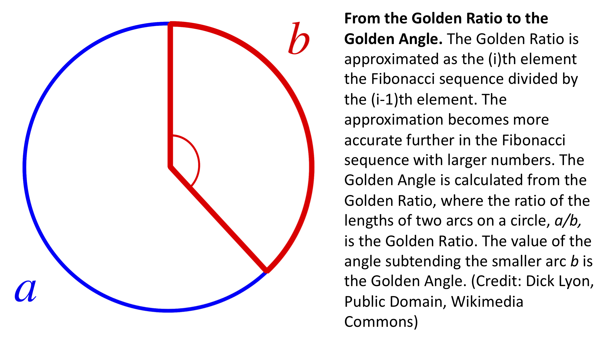

Lesson 3.6¶
Practice with Calculating the Golden Angle with Loops 🌻¶
From the Fibonacci sequence to the Golden Ratio¶
After watching the video tutorial, in the cell below, create a for loop that calculates the first 100 numbers of the Fibonacci sequence.
Do the following:
Remember to create a list outside your
forloop to store your sequence. Call the listfibonacciRemember that you need to specify the first two numbers of the sequence (0 and 1) in your list to calculate subsequent terms
You need to begin iterating on the 3rd element (index = 2) of your list to calculate the sequence
Each element of the sequence is the sum of the
i-2andi-1elements
# Put your answer here
In the cell below, use the len() function to calculate the length of your list fibonacci (it should have 100 elements. If not, modify your loop to make sure this is the case).
# Determine the length of your Fibonacci list here:
Now that you have successfully made a loop to calculate the Fibonacci sequence, let’s modify your code to calculate the Golden Ratio, \(\varphi\)!
Calculating the Golden Ratio is easy if you have already calculated the Fibonacci sequence. The Golden Ratio is approximated by the ratio of element i divided by element i-1 of the Fibonacci sequence. The approximation of the Golden Ratio i/(i-1) becomes more accurate further in the series with larger numbers. Let’s use our loop making skills to approximate the Golden Ratio!
Copy and paste your Fibonacci sequence code from above. In the cell below, modify your code to do the following:
In addition to your Fibonacci list (pre-populated with 0 and 1 to calculate the sequence) add another empty list outside the loop called
phito store your approximations of the Golden RatioThis time, let’s only calculate 52 elements of the Fibonacci sequence and 50 elements of phi. You still have to begin on the 3rd element (index = 2) to calculate the Fibonacci sequence, so you should add two extra iterations to make sure you get all 50 approximations of phi (because unlike the Fibonacci sequence, this list starts without any members).
In the
forloop, still calculate each element of the Fibonacci sequence as the sum of(i-2)+(i-1)elements and append to the Fibonacci listAdd within your
forloop a calculation of phi asi/(i-1)elements of the Fibonacci sequenceImportant: in order for you to calculate phi as described above, the
ith element of your Fibonacci list doesn’t exist until you calculate it! Be sure to calculate the next Fibonacci number of the series and append it to your list before you calculate phi. Fibonacci first, then phi.
# Put your answer here
In the cell below, print out:
The len() of your list
phiPrint your list
phi. Your list should approximate the value of the Golden Ratio: 1.618033988749895
# Put your answer here
From the Golden Ratio to the Golden Angle¶
The beautiful spiral phyllotaxy of sunflowers and the lateral organs of other plants arises from the Golden Angle. The Golden Angle is derived from the Golden Ratio. If two arcs on a circle are defined such that the length of arc a divided by arc b is the Golden Ratio, then the resulting angle is the Golden Angle. As we just saw, the Golden Ratio is a product of the Fibonacci sequence, and this is how the inspiring patterns seen in a sunflower disc are linked to the Fibonacci sequence! 🌻

To approximate the Golden Angle, let’s figure out a way to calculate it from the Golden Ratio, as we already know how to do that!
But first, let’s get our most accurate estimation of the Golden Ratio.
In the next lesson, we will be using a function called .pop(). .pop() added to the end of a list will return the last element of the list. As the last member of our list phi is the best approximation of the Golden Ratio that we have, let’s use .pop() to get that value! The way you use .pop() is as follows:
my_variable = my_list.pop()
In the cell below, create a new variable called golden_ratio by using .pop() to isolate the last value of the list phi. Print out the value of golden_ratio.
# Put your answer here
The Golden Ratio has some very interesting properties.
In the cell below, print() the following using your new variable golden_ratio:
Print the value of
golden_ratioPrint the value of
golden_ratiosquaredPrint the value of
1 / golden_ratio
What do you observe that is similar between all the values that you just calculated?
# Put your answer here
Not only do all the values you just calculated end in the same fractional component, but also notice that golden_ratio**2 = 1 + golden_ratio. With this information, let’s figure out how to derive the Golden Angle from the Golden Ratio!
Let f equal the fraction of the length of a circle’s circumference that is occupied by the arc b, where the ratio of the lengths of the arcs a / b is the Golden Ratio.
golden_ratio = a/b
f = b / (a + b)
f = (b/b) / ( (a/b) + (b/b) )
f = 1 / (golden_ratio + 1)
f = 1 / golden_ratio**2
From the derivation above, you can see that the fraction of the circumference of the circle occupied by the arc b that is subtended by the Golden Angle is 1 / golden_ratio**2!
In the cell below, approximate the Golden Angle from your approximation of the Golden Ratio in degrees as:
golden_angle = 360*(1/golden_ratio**2)
Your answer should be close to 137.50776405003785.
# Put your answer here
Congratulations!!! You calculated the Golden angle from scratch using computation!!! You will use the Golden angle in the next activity to model the growth of a sunflower.